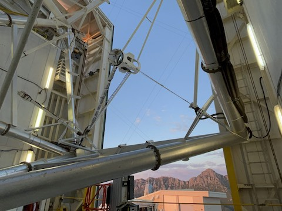
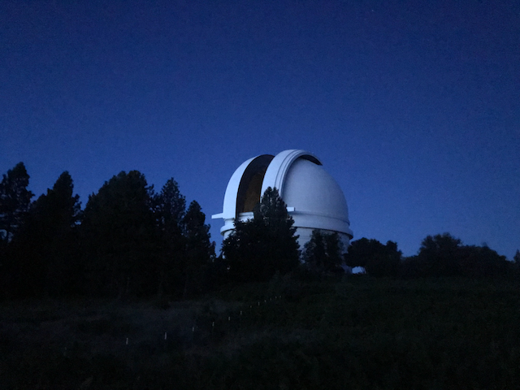

Extreme AO with MagAO-X
Using incoherent sparkles to calibrate pyramid WFS.
Learn moreAn overview of my research projects.
When I started college, I was pretty certain that I would end up in a CS office job. Yet here I am, deeply invested in a PhD. Each of my projects gave another window into the world of academia, and eventually I switched fields to follow the work I found the most exciting.
These research projects, spanning from undergrad to graduate work, are roughly organized by which telescope they utilized.
Using incoherent sparkles to calibrate pyramid WFS.
Learn more
Guest helping MAPS on their CACAO based controlled code.
Learn more
Comparing performance across four wavelengths to show GLAO performance into the blue.
Learn more
Using GLAO look telemetry to predict wind direction, speed, and height
Learn more
Working with Empirically orthogonal Functions to implement predictive AO control on Keck.
Learn more
I worked on a compact AO team that used the Palomar site for testing.
Learn more